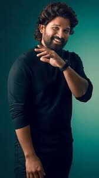
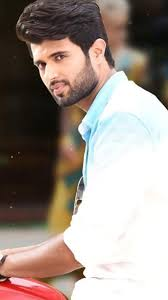
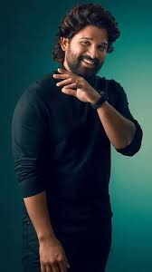
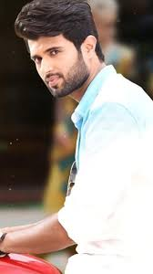

Konidala Pawan Kalyan[3] (born Konidala Kalyan Babu; 2 September 1971[2]) is an Indian politician and actor who has been serving as the 10th deputy chief minister of Andhra Pradesh since June 2024. He is also serving as the Minister of Panchayat Raj, Rural Development & Rural Water Supply; Environment, Forests, Science & Technology in the Government of Andhra Pradesh. He is the founder and president of the Jana Sena Party. As an actor, Kalyan primarily works in Telugu cinema and is known for his unique style and mannerisms. He has a huge fan base[4] and is one of the highest-paid actors of Indian cinema. He has been featured in Forbes India's Celebrity 100 list multiple times since 2013. Kalyan is the recipient of a Filmfare Award South and a SIIMA Award among other accolades.[8] Kalyan made his acting debut in the 1996 film Akkada Ammayi Ikkada Abbayi, but rose to prominence with the dramas Gokulamlo Seeta (1997) and Suswagatham (1998). He achieved stardom for his performance in Tholi Prema (1998), which won the National Film Award for Best Feature Film in Telugu that year. Kalyan established himself as a leading actor with successful projects such as Thammudu (1999), Badri (2000), Kushi (2001), Jalsa (2008), Gabbar Singh (2012), Attarintiki Daredi (2013), Gopala Gopala (2015), and Bheemla Nayak (2022). He received the Filmfare Award for Best Actor Telugu for Gabbar Singh. Kushi and Attarintiki Daredi held the record of being the highest-grossing Telugu film of all time.[9] In addition to acting, he produces films under the banners Anjana Productions and Pawan Kalyan Creative Works. In 2008, Kalyan entered into politics as the youth wing president of his brother Chiranjeevi's Praja Rajyam Party, but he left after it merged into the Congress party. He founded the Jana Sena Party in March 2014. He is a black belt in Karate and trains in various martial arts which he depicts in his films regularly. Kalyan is referred to as Power Star by his fans and in the media. Kalyan is the founder of the charity Common Man Protection Force.[14] Early life and education Kalyan was born as Konidala Kalyan Babu[15] on 2 September 1971[2] in a Telugu family to Konidala Venkata Rao and Anjana Devi in Bapatla, Andhra Pradesh.[19][20] Venkata Rao worked as a police constable and was transferred on a regular basis. Kalyan was educated at the St. Joseph's High School in Nellore.[21] He was awarded the title "Pawan" during one of his public martial arts presentations.[22] He also holds a black belt in Karate.[23] Acting career Kalyan made his acting debut in 1996 with Akkada Ammayi Ikkada Abbayi. His second film Gokulamlo Seeta released the following year. He next appeared in A. Karunakaran-directed Tholi Prema (1999) which won the National Award and six Nandi Awards that year.[24] After Tholi Prema, Kalyan acted in Thammudu, playing the role of a kick boxer. Thammudu was released on 15 July 1999 and was written and directed by P. A. Arun Prasad. On 20 April 2000, he acted in Puri Jagannadh's first directorial venture, Badri. Produced by T. Trivikrama Rao and music composed by Ramana Gogula.[25] In 2001, he acted in the film Kushi. The film was released on 27 April 2001 and was directed by S. J. Suryah, which became a huge blockbuster that year.[26] In 2001, he was the brand ambassador for Pepsi at the time his brother Chiranjeevi was promoting Coca-Cola.[27] His next film Johnny, written and directed by himself, released on 26 April 2003. Kalyan also starred in the film, along with Renu Desai, produced by Allu Aravind, and music composed by Ramana Gogula.[28] In 2004, his film Gudumba Shankar was released. The film was directed by Veera Shankar and produced by Kalyan's brother Nagendra Babu under Anjana Productions banner. The film's script and screenplay were written by Kalyan and he also choreographed three songs in this film and action scenes were conceived and choreographed by him. In 2005, the film Balu, directed by A. Karunakaran was released. This was Karunakaran's second film with Kalyan after Tholi Prema. This film was produced by C. Ashwini Dutt under Vyjayanthi Movies banner.[29] In 2006, Bangaram, directed by Tamil director Dharani was released. During March 2006, Kalyan launched his second directorial venture Satyagrahi, produced by A. M. Rathnam, which would be a tale questioning the atrocities in society. After spending a few months on pre-production by signing with P. C. Sreeram and A. R. Rahman, the film was later suddenly shelved.[30] Later that year, he appeared in Annavaram, directed by Bhimaneni Srinivasa Rao. Asin, and Sandhya were cast alongside Kalyan in the film and the film was produced under Super Good Films. The film was released on 29 December 2006[31] and collected ₹23 crore (US$2.8 million) in 3 weeks and ₹30 crore (US$3.6 million) in 70 Days.[32][33] The film was a remake of the Tamil film Thirupaachi.[34] In 2008, Jalsa, directed by Trivikram Srinivas and produced by Allu Aravind was released on 2 April. This film got the highest first-day collection in Telugu film history and was also the first for any regional film in south India in a single state by that time.[35] Jalsa turned out to be the highest grosser of 2008 in Telugu cinema.[36] Puli was written and directed by S. J. Suryah and released in 2010. An official announcement was made in the same year that Kalyan was going to play a small role in a movie about Jesus Christ directed by Singeetam Srinivasa Rao.[37] In 2011, he appeared in Teen Maar, a remake of Love Aaj Kal, directed by Jayanth C. Paranjee.[38] He also appeared in Vishnuvardhan's gangster film Panjaa.[39][40] In 2012, he appeared in Gabbar Singh, a remake of Dabangg, directed by Harish Shankar.[41] The film successfully completed 100 days and stood as the second highest-grossing Telugu film at that time.[42][43][44] After this film, he worked in Puri Jagannadh's Cameraman Gangatho Rambabu.[45] In 2013, he appeared in Trivikram Srinivas's Attarintiki Daredi. The film, released on 27 September 2013, faced problems with piracy as half of the movie was leaked to the internet prior to its release.[46] In spite of this the movie was a blockbuster in 2013. The movie completed 100 days in 33 theaters and held the record of the highest-grossing film in Tollywood by that time, surpassing the previous record of Magadheera (2009).[47] Later, it was surpassed by Baahubali: The Beginning (2015).[48] In 2014, a Star India survey ranked Kalyan as one of the Top 5 Heroes of India.[49] In 2015, he appeared in Gopala Gopala, a Telugu remake of OMG Oh My God!.[50] The film featured Kalyan starring alongside Venkatesh and was directed by Kishore Kumar Pardasani. In 2016, Kalyan's Sardaar Gabbar Singh, a sequel to his 2012 film Gabbar Singh received mixed-to-negative reviews from critics. Katamarayudu (2017), a remake of Tamil film Veeram marked his second collaboration with Kishore Kumar Pardasani. In 2018, he appeared in the film Agnyaathavaasi directed by Trivikram Srinivas. This marked Kalyan's 25th film.[51] In 2021, he made a comeback to films by appearing in Vakeel Saab, directed by Venu Sriram. He announced Hari Hara Veera Mallu, which is being directed by Krish Jagarlamudi. The shooting of the film has currently been on hold for almost 2 years, owing to Kalyan's political commitments. Mythri Movie Makers also announced Ustaad Bhagat Singh with Kalyan, under the direction of Harish Shankar.[52] He also acted in the remake of Vinodhaya Sitham, Bro, with Sai Dharam Tej, under the direction of Samuthirakani, who also directed the original film. Another film, OG, was subsequently announced with Sujeeth as the director and to be produced by D. V. V. Danayya.[53]
Allu Arjun (born 8 April 1982) is an Indian actor who works in Telugu cinema. One of the highest-paid actors in Indian cinema,[1] Allu Arjun has been featured in Forbes India's Celebrity 100 list since 2014.[2] He is a recipient of several awards including a National Film Award, six Filmfare Awards, and three Nandi Awards.[3] He is considered to be one of the finest dancers in Indian cinema.[4] He is popularly referred to as "Stylish Star" and "Icon Star".[5] Allu Arjun made his debut with Gangotri in 2003. He rose to prominence starring in Sukumar's cult classic Arya (2004) for which he earned a Nandi Special Jury Award.[6] He consolidated his reputation with the action films Bunny (2005) and Desamuduru (2007). In 2008, he starred in the romantic drama Parugu for which he won his first Filmfare Award for Best Actor – Telugu.[7] Allu Arjun went on to star in notable films such as Arya 2 (2009), Vedam (2010), Julayi (2012), Race Gurram (2014), S/O Satyamurthy (2015), Rudhramadevi (2015), Sarrainodu (2016), DJ: Duvvada Jagannadham (2017), Ala Vaikunthapurramuloo (2020) and Pushpa: The Rise (2021). His performances as a lower-class cable operator in Vedam and as a carefree street smart man in Race Gurram won him two Filmfare Awards for Best Actor – Telugu. He also won the Filmfare Award for Best Supporting Actor for his portrayal of prince Gona Ganna Reddy in Rudhramadevi. He received high acclaim for his performance in Pushpa: The Rise, which emerged as the highest-grossing Indian film in 2021 and ranks among the highest-grossing Telugu films of all time. The film also earned him his first National Film Award for Best Actor, and fourth Filmfare Award for Best Actor – Telugu. Allu Arjun endorses a wide number of brands and products, and is a celebrity brand ambassador for the Pro Kabaddi League[8] and for the streaming service Aha.[9][10] In 2021, Allu Arjun became the brand ambassador of Sri Chaitanya Educational Institutions.[11] Early life Allu Arjun was born on 8 April 1982[a] in a Telugu family to film producer Allu Aravind and Nirmala in Madras (present-day Chennai). His paternal grandfather was the noted film comedian Allu Ramalingaiah who appeared in over 1000 films.[15][16] Their native place is Palakollu of West Godavari district, Andhra Pradesh.[17] Allu Arjun grew up in Chennai before their family moved to Hyderabad in his 20s.[18][19] He is the second of three children. His elder brother Venkatesh is a businessman while his younger brother Sirish is also an actor. His paternal aunt is Surekha Konidela, the wife of actor Chiranjeevi.[20] He is the first cousin of actor Ram Charan.[21] Career Career beginnings (1985–1986; 2001–2007) After playing as a child artist in Vijetha (1985) and as a dancer in Daddy (2001), he made his adult debut in Gangotri.[22] The film was directed by K. Raghavendra Rao with his father Allu Aravind producing, along with C. Ashwini Dutt.[23] Praising his acting performance, Jeevi of Idlebrain criticised his looks in the film and added that "Arjun should choose roles that amplify his strength and nullify his weaknesses."[24] He then appeared in Sukumar's Arya.[25] He plays the eponymous lead, an outgoing and free-spirited boy falling in love with Geetha (Anu Mehta), an introverted girl who is on the shield of another person Ajay (Siva Balaji).[26] The film proved to be his breakthrough, earning a first nomination for the Filmfare Award for Best Actor – Telugu and won the Nandi Special Jury Award and the CineMAA Award for Best Actor (Critics).[27] The film was a critical and commercial success,[28] grossing over ₹30 crore,[29] with a production budget of ₹4 crore.[30] In 2006, the film was dubbed and released in Malayalam in Kerala. Owing to the film's success, he received major acclaim across the region and the Malayali people.[31] He next starred in V. V. Vinayak's Bunny playing the eponymous lead, a college student.[32] Being successful at the box office, critics praised his efforts, mannerisms and dancing.[33][34] His next film was A. Karunakaran's musical love story Happy.[35][36] The film did well at the box-office especially in the overseas markets.[37] A critic appreciated his dancing skills and performance, but felt that his character is a typical happy-go-lucky guy.[38] Experimentation of genres (2007–2010) He then starred in Puri Jagannadh's action film Desamuduru in which he played the role of Bala Govindam, a fearless journalist who falls for a woman with a darker past.[39] The film was a commercial success, fetching him a Santosham Film Award, a CineMAA Award and his second nomination for the Filmfare Award for Best Actor – Telugu.[40] The same year, he made his second cameo appearance alongside Chiranjeevi, in the song "Jagadeka Veerudiki" from the film Shankar Dada Zindabad. His next film was Bhaskar's Parugu, where he played the role of Krishna, a happy-go-lucky man from Hyderabad who helps his friend to elope with his love, only to experience the wrath of the woman's father and the emotional struggle he felt. Idlebrain wrote: "Allu Arjun is pretty excellent in the first half as the characterization in the first half is vibrant and needs loads of energy. He carried the entire first half on his shoulders. He excelled in the emotional scenes in the second half."[41] Writing for Rediff.com, Radhikha Rajamani stated that "Arjun performs well though he is rather subdued."[42] Allu Arjun won his first Filmfare Award for Best Actor – Telugu and his second Nandi Special Jury Award. Allu Arjun next starred in Sukumar's action comedy Arya 2. A spiritual sequel to the romantic action film Arya (2004), he played the role of Arya, an orphan who is behaviourally sick in that he is consumed with possessiveness for his friend Ajay (Navdeep), who never accepts him. The film revolved around the complexities of love–hate relationships and love triangles.[43] His character in the film had shades of grey.[44] Sify wrote that "Allu Arjun is full of energy as the guy caught in the powerful current of love. Though he plays the part with negative shades, his characterization could evoke a lot of sympathy from the audiences. His dances are mind-blowing and he excels in emotional scenes."[45] Oneindia appreciated his dance moves and acting performances, especially the comedy scenes.[46] He received his fourth nomination for the Filmfare Award for Best Actor – Telugu for his performance in the film. He had two releases in 2010. The first was Gunasekhar's Varudu, in which he starred alongside Arya and Bhanu Sri Mehra.[47] The filmreceived mixed reviews from critics and was a box-office bomb.[48][49] His second release of the year was the highly acclaimed hyperlink anthology film Vedam. It was his first A-rated film in India, and the story takes an inspiration from 26/11 Mumbai blasts in Taj Mahal Palace Hotel, Mumbai.[50] He played the role of Anand "Cable" Raju, a cable operator hailing from Jubilee Hills (Hyderabad) slum. The film also features Anushka Shetty, Manchu Manoj and Manoj Bajpayee in other prominent roles.[51] His performance received appreciation from film critics,[52] with The Times of India calling it "scintillating"[53] and Idlebrain.com calling it as "best in his career".[54] A critic also commented that "He's a good dancer and does justice to his role."[55] Another critic wrote that "Allu Arjun is excellent as the groom who goes all out to get his bride back. His mass dialogues are good in the second half."[56] He achieved his second Filmfare Award for Best Actor – Telugu for the performance in the film.
Deverakonda Vijay Sai(born 9 May 1989), professionally known as Vijay Deverakonda,[1] is an Indian actor and film producer who works predominantly in Telugu films.[2][3] One of the highest-paid actors of Telugu cinema, he has featured in Forbes India's Celebrity 100 list since 2018 and has received several accolades, including a Filmfare Award, a Nandi Award, and two SIIMA Award.[4] Deverakonda made his debut with Nuvvila (2011) and received praise for his role in the coming-of-age drama Yevade Subramanyam (2015). He rose to prominence as a leading film actor by starring in the blockbusters Pelli Choopulu (2016) and Arjun Reddy (2017), winning the Filmfare Award for Best Actor – Telugu for his performance as a volatile surgeon in the latter. He further established himself with commercially successful films such as Mahanati (2018), Geetha Govindam (2018), and Taxiwaala (2018).[5][6] This success was followed by a series of poorly received films such as the critically panned big-budget action film Liger (2022). In 2019, Deverakonda launched his own production house King of the Hill Entertainment, which produced Meeku Maathrame Cheptha (2019) and Pushpaka Vimanam (2021).[7][8] Beyond his film career, Deverakonda has designed his own fashion brand Rowdy Wear, which launched on Myntra in 2020,[9] and is the co-owner of the volleyball team Hyderabad Black Hawks.[10] Deverakonda is also a celebrity endorser for numerous products and supports various humanitarian causes. Early life Deverakonda Vijay Sai was born in Hyderabad, Andhra Pradesh (now Telangana) to Govardhan Rao and Madhavi.[11][12] His family hails from Thummanpeta village of erstwhile Mahbubnagar district (now Nagarkurnool).[11][13] His father was a television serial director who quit doing them due to lack of success. Vijay completed his schooling from Sri Sathya Sai Higher Secondary School, Puttaparthi.[14] He then studied Intermediate at the Little Flower Junior College, Hyderabad.[15] He holds a Bachelor of Commerce degree from Badruka College of Commerce & Arts.[13][16] His younger brother, Anand Devarakonda, is also an actor in Telugu cinema.[17] Career Early career (2011–2015) Deverakonda made his debut with Ravi Babu-directed romantic comedy Nuvvila (2011).[18] He later appeared in Sekhar Kammula's Life is Beautiful (2012) in a minor role.[19] He was introduced to Nag Ashwin, who later cast him in a supporting role for the 2015 coming-of-age drama Yevade Subramanyam alongside actor Nani.[20] The film was produced by the daughters of Ashwini Dutt, a producer in the Telugu film industry; Priyanka Dutt backed him and once shooting started, Swapna Dutt signed him onto her company.[21][22] Breakthrough and setbacks (2016–present) Deverakonda at YouTube Fan Fest in 2018 Deverakonda's first lead role was in Pelli Choopulu, a coming-of-age romance film directed by Tharun Bhascker. The film became commercially successful and won the Filmfare Award for Best Film – Telugu and the Best Feature Film in Telugu at the 64th National Film Awards.[23][24] He starred in the masala film Dwaraka in 2017. He next starred in the romantic drama Arjun Reddy which received both praise and criticism for being bold and radical.[25] However, his portrayal of a self-destructive, short-tempered, and alcoholic surgeon received widespread critical acclaim, and won him the Filmfare Award for Best Actor – Telugu.[26][27] In 2019, Film Companion ranked Deverakonda's performance in Arjun Reddy in "100 Greatest Performances of the Decade".[28] Following Arjun Reddy he starred in Ye Mantram Vesave, which was supposed to release in 2013 but released in 2018. He then starred in Mahanati, a biographical film revolving around the life of actress Savitri. Deverakonda's next release in 2018 was Geetha Arts' romantic comedy Geetha Govindam, in which he starred as a naive and nervous college professor. The film received mixed-to-positive reviews upon release, and proved to be a major commercial success at the box office. Deverakonda got his second nomination for the Filmfare Award for Best Actor – Telugu for his performance in the film. His next film was the Tamil political thriller NOTA, directed by Anand Shankar, which performed poorly at the box office.[29] His next project was UV Creations' supernatural comedy thriller Taxiwaala.[30] In 2019, Deverakonda was seen in Bharat Kamma's Dear Comrade, a romantic action drama, alongside Rashmika Mandanna. He later signed Hero, directed by Anand Annamalai co-starring Malavika Mohanan but the film was reportedly shelved after beginning production.[31] In 2020, he acted in Kranthi Madhav's romantic drama World Famous Lover opposite Raashii Khanna, Catherine Tresa, Aishwarya Rajesh, and Izabelle Leite which opened to negative reviews.[32] In 2022, he acted in the Hindi–Telugu bilingual film Liger which was directed by Puri Jagannadh and produced by Karan Johar which also opened to highly negative reviews.[33][34] He then starred in Kushi which was directed by Shiva Nirvana and it opened to mixed reviews.[35] The film was an average grosser at the box office.[36] In 2024, Deverakonda starred in The Family Star, which was a box-office bomb.[37] Later, that year he was seen in a cameo appearance as the warrior Arjuna in Nag Ashwin's science-fiction epic Kalki 2898 AD.Other work Deverakonda was the brand ambassador of food delivery app Zomato.[39] On 15 October 2018, he launched his fashion brand Rowdy Wear.[9] Later, in 2020 Rowdy Wear was launched on Myntra.[40] Deverakonda has donated to relief funds, including a donation to families of victims in the 2019 Pulwama attack.[41][42][43][44] Deverakonda conceptualised and founded The Deverakonda Foundation, a nonprofit organisation in April 2019.[45] In early 2020, he donated ₹24,000 through the Foundation to help Ganesh Ambari, a kickboxer who won the Vaco Indian Open International Kick-boxing Championship Title 2020.[46] An initiative was started to battle COVID-19 pandemic crisis. The foundation has successfully aided 17,000 middle-class families with their groceries and basic essentials, spending ₹1.7 crores, with the help of his Middle Class Fund (MCF). More than 8,500 volunteers donated over ₹1.5 crores to join his community effort.[47][48] Organisers decided to end the initiative on 2 June 2020.[49][50] Devarkonda opened his first multiplex theatre in Mahbubnagar in 2021.[51] In the media Deverakonda at Rowdy Sundowner Party 2020[52] Deverakonda says his family used to call him a rowdy every time he did something that they did not approve of. Over time, he started using this term for himself and his fans.[53][54] Deverakonda is known to express his real, honest, and unfiltered opinions on stage or during interviews, for which he has gathered a lot of popularity and criticism,[55] as seen during his speech at the audio launch of Arjun Reddy, in 2017.[56][57][58] Deverakonda placed 72nd in the Forbes India Celebrity 100 list of 2018.[59] He was ranked in The Times Most Desirable Men at No. 4[60] in 2018, at No. 3[61] in 2019, at No. 2[62] in 2020. He was additionally featured by Forbes India in their 30 Under 30 list,[63] and became the most-searched South Indian actor according to Google's annual report.